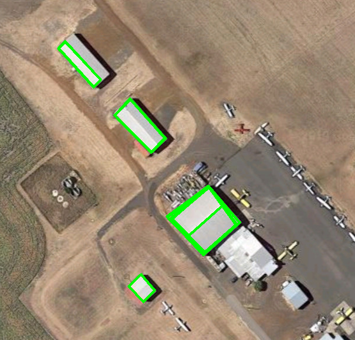

Wybieracie zadanie - można pracować w parach
Przez miesiąc pracujecie nad zadaniem
Na spotkaniach klubu pomagamy wam z problemami
Na koniec miesiąca podsumowanie i integracja
Sieciówka z Raspberry
GUI toolkit do dronów/samolotów
Strona klubu :)
Łazik, kamera, gimbal
Protokół do komunikacji radiowej
Mapowanie terenu: samolot + kamera
Tracker - sterowanie anteną
Building recognition
Ogarnięcie protokołu MavLink
Mamy Raspbery Pi w jakiejś sieci (np w domu)
Jak podpiąć się do niego z innej sieci? (np z uczelni)
Linux networking (ip addr, ssh, porty w routerach)
Graficzne narzędzie do monitorowania
Wyświetlanie map/zaznaczanie punktów
Wyświetlanie napływających z samolotu danych
Pomysł na łatwą rozbudowywalność
kivy ?
Szukamy ogarniętego frontendowca,
który trzaśnie nam ładną wizytówkę
Łazik z kamerą na ruchomym gimbalu
Raspberry Pi/Nvidia Jetson
Zdalne sterowanie
Niskopoziomowy protokół do wysyłania rozkazów
Protokół UDP
Musi być oszczędny i wydajny
python (biblioteka struct)
Dane z GPSa + wysokość + FOV soczewki
Pomysł na trasę lotu w trakcie skanu
Połączenie zdjęć w mapę
Nałożenie koordynatów
Tracker umieszczony na dronie
Dane o pozycji swojej i pozycji celu
Wycelowanie anteny w cel
Znalezienie i oznaczenie budynków na zdjęciu
Najlepiej wykorzystać filmy kręcone z samolotów
OpenCV/Yolo/Inny ML

Protokół do komunikacji z dronami
Przenosi mnóstwo ważnych danych
python - pymavlink
Wybieracie zadanie - można pracować w parach
Przez miesiąc pracujecie nad zadaniem
Na spotkaniach klubu pomagamy wam z problemami
Na koniec miesiąca podsumowanie i integracja
Sieciówka z Raspberry
GUI toolkit do dronów/samolotów
Strona klubu :)
Łazik, kamera, gimbal
Protokół do komunikacji radiowej
Mapowanie terenu: samolot + kamera
Tracker - sterowanie anteną
Building recognition
Ogarnięcie protokołu MavLink